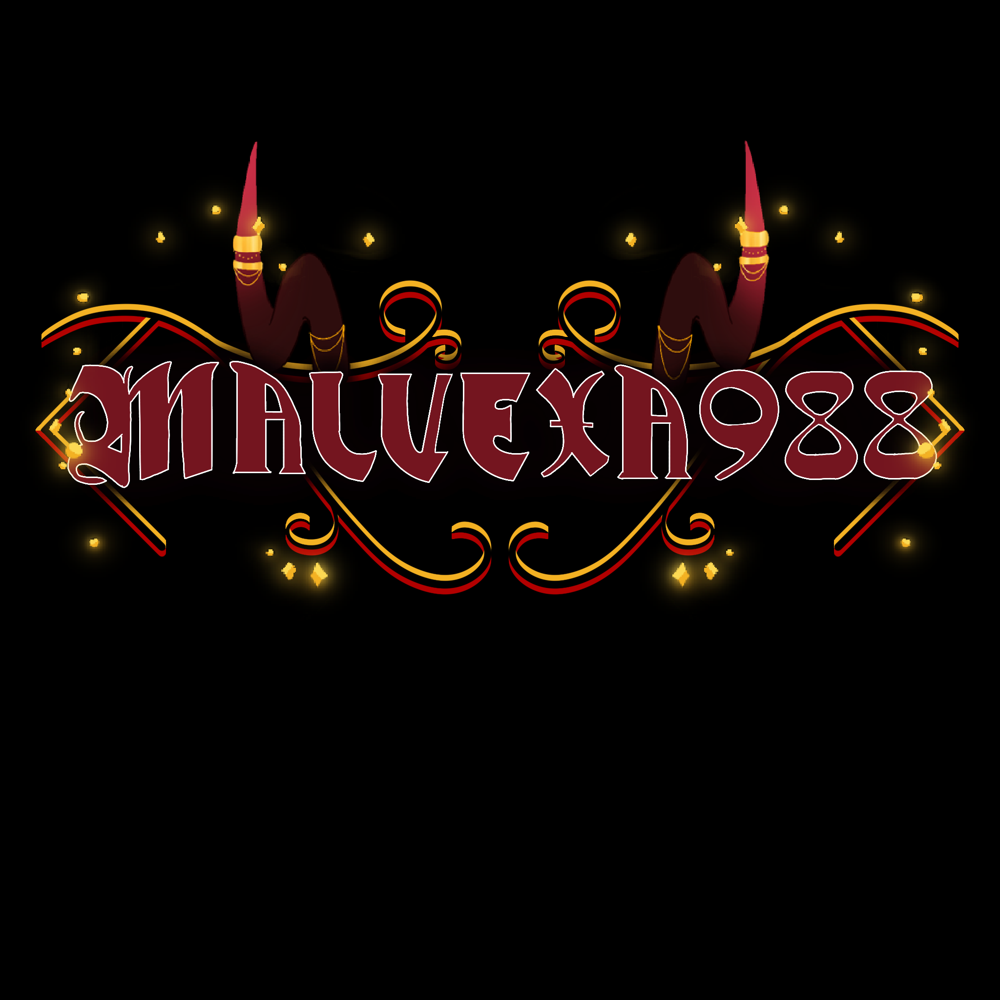
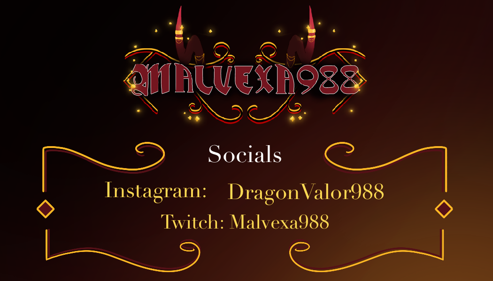

Welcome to Malvexa. She is a new VTuber on Twitch and has a royalty-like air to her. This is her twitch banner that everyone will see when she is not streaming. The black adds to her mysterious feeling, while the gold and red reinforce her royal stature.

Here is a full look at the VTuber model. Her long dress accentuates her graceful nature and her jewelry adds a wealth of interest.

These panels are for information headers in the twitch channel, and the larger screens are to be used during the stream to convey information to viewers during the starting up period and ending process, as well as any intermissions so viewers aren't waiting in silence with no idea why.

Here is a small animated GIF for any alerts that pop up during the stream. It keeps the core colors while adding interest and movement. It also features a small dragon pet that is part of the channel as well. This alerts both the streamer and the viewer to things happening in the channel in real time. From users subscribing to donations. It also creates an incentive for viewers to subscribe and donate, since they will get recognition and the whole stream will see that they specifically have done one of those actions.

This is the logo for the VTuber brand. It shows the channel name and is consistant with the colors and design of previous brand aspects.

This is the front of the business card for the VTuber brand.

This is the back of the business card for the VTuber brand.